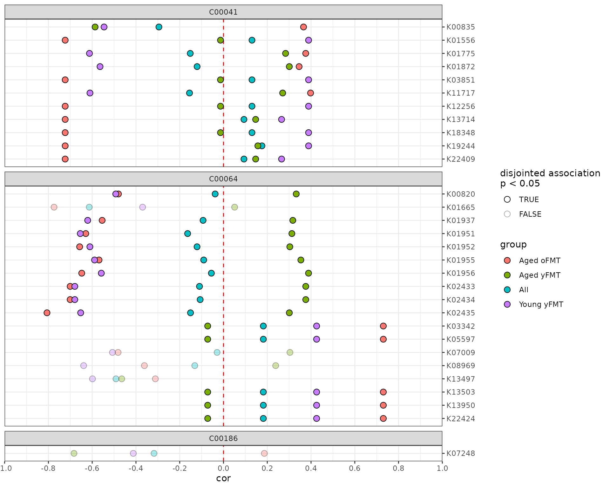
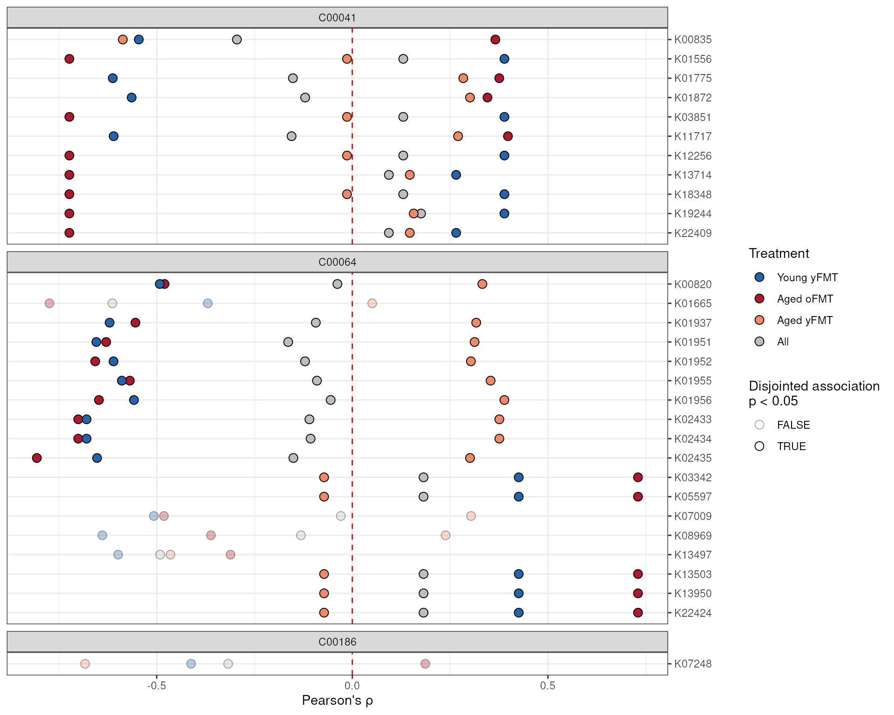
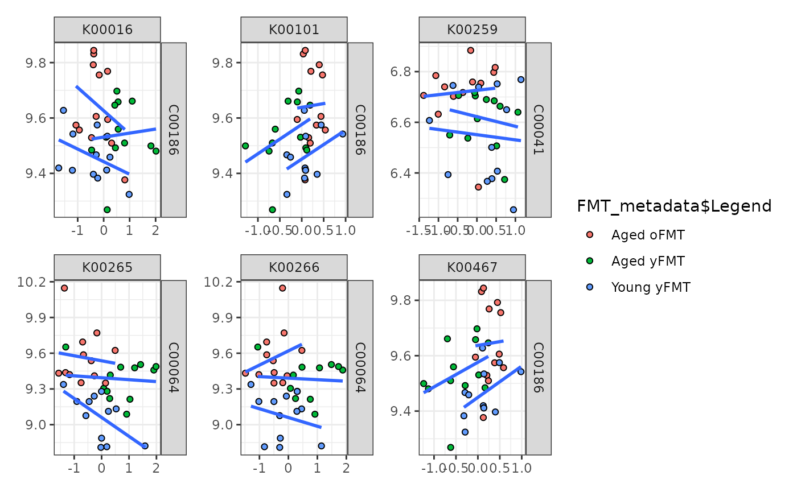

Introduction
The anansi package computes and compares the association
between the features of two ’omics datasets that are known to interact
based on a database such as KEGG. Studies including both functional
microbiome and metabolomics data are becoming more common. Often, it
would be helpful to integrate both datasets in order to see if they
corroborate each others patterns. However, all-vs-all association
analyses are imprecise and likely to yield spurious associations. This
package takes a knowledge-based approach to constrain association search
space, only considering metabolite-function interactions that have been
recorded in a pathway database. In addition, it provides a framework to
assess differential associations.
While anansi is geared towards metabolite-function
interactions in the context of host-microbe interactions, it is
perfectly capable of handling any other pair of data sets where some
features interact canonically.
A note on functional microbiome data
Two common questions in the host-microbiome field are “Who’s there?”
and “What are they doing?”. Techniques like 16S rRNA sequencing and
shotgun metagenomics sequencing are most commonly used to answer the
first question. The second question can be a bit more tricky, as it
often requires functional inference software to address them. For 16S
sequencing, programs like PICRUSt2 can be used to
infer function. For shotgun metagenomics, this can be done with programs
such as HUMANn3 in the
bioBakery suite and woltka. All of these
algorithms can produce functional count data in terms of KEGG
Orthologues (KOs) organised as tables, which can be directly passed to
anansi.
Getting started with anansi
Installation
Install the development version from GitHub with
remotes:
install.packages("remotes")
remotes::install_github("thomazbastiaanssen/anansi")Data preparation
The anansi framework requires input data to be prepared in a specific
format, namely the AnansiWeb S7 class. This is to ensure
that features are correctly linked across input datasets. We will first
discuss the required input data and then demonstrate the
weaveWeb method, which is the recommended way to prepare
input for the anansi framework.
Input formatting for anansi
The main anansi function expects data in the
AnansiWeb class format, which contains four tables:
feature tables: tableY and tableX.
The first two tables, tableY and tableX are
the feature tables of your two data modalities (e.g., metabolites,
genes, microbes, …). Both tables should have columns as features and
rows as samples. Below is an example of an appropriately formatted
feature table, we will use it in the sections below.
## anansi expects samples to be rows and features to be columns:## K00001 K00002 K00003 K00004
## PB.02.1 0.45305500 -0.02023133 -0.34911910 -0.08697995
## PB.02.2 0.60322048 -0.05311274 -0.36002367 -0.11986136
## PB.03.1 0.28627863 0.25684165 -0.04989191 0.19009303
## PB.03.2 1.26395782 0.12418540 -0.54208318 0.05743678
## PB.05.1 -0.09183481 -0.62022598 0.45770449 -0.68697460
## PB.05.2 0.68088279 -0.55654324 0.63207703 -0.62329186
## PB.06.1 -0.51986662 0.44636557 -0.16059980 0.37961695
## PB.06.2 0.08740716 0.52136526 -0.50323847 0.45461664
## PB.08.2 -0.54309849 0.20455856 -0.04633670 0.13780994
## PB.08.3 -0.38515537 0.38236376 -0.38668670 0.31561514linking information: link.
The third table, link, provides the information to link
the features across the first two tables, tableY and
tableX. anansi provides a pre-built map
between ko, cpd and ec feature annotations from the KEGG database, but
users can also provide their custom mapping information. We will not
expand on here, but see
vignette on adjacency matrices. Also see
?anansi::MultiFactor()
Additional sample data for analysis: Metadata
The final table is metadata: a data.frame
with additional information about the data set. Its rows correspond to
samples and its columns to variables that can be used as covariates in
downstream anansi() analysis.
## anansi expects samples to be rows and features to be columns:## Sample_ID Legend
## 1 PB.02.1 Aged yFMT
## 2 PB.02.2 Aged yFMT
## 3 PB.03.1 Aged oFMT
## 4 PB.03.2 Aged oFMT
## 5 PB.05.1 Aged yFMT
## 6 PB.05.2 Aged yFMT
## 7 PB.06.1 Aged oFMT
## 8 PB.06.2 Aged oFMT
## 9 PB.08.2 Aged oFMT
## 10 PB.08.3 Aged oFMTWeave a web🕸️
The weaveWeb() function accepts the four input tables
discussed above and collates them into an AnansiWeb object.
The AnansiWeb format is a necessary input file for the main
anansi workflow. It allows anansi to keep
track of which features from the two input data sets should be
considered as pairs.
Specify features to link
Additionally, weaveWeb() requires the user to specify
the names of the feature types that should be linked. These names need
to be present as the columns of the link table. In this
case, we’ll link KEGG compound (cpd) to KEGG Orthologues (ko).
# Create AnansiWeb object from tables
web <- weaveWeb(x = "ko", y = "cpd", link = kegg_link(), tableY = tableY, tableX = tableX,
metadata = FMT_metadata)## Dropped features in tableX: 2476 remain.On model notation and the names tableY and
tableX
Though most of the examples use metabolites and functions,
anansi is able to handle any type of big/’omics data, as
long as there is a dictionary available. Because of this, anansi uses
the type-naive nomenclature tableY and tableX.
The Y and X refer to the position these measurements will have in the
linear modeling framework:
\[
Y \sim X \times{covariates}
\] ### weaveWeb with Bioconductor pipeline
As an alternative to providing input as raw tables,
weaveWeb() also accepts the Bioconductor classes
MultiAssayExperiment (MAE) and
TreeSummarizedExperiment (TSE) as input. Conversely, an
AnansiWeb object can be converted to a MAE or TSE with the
functions asMAE() and asTSE().
# Convert web to mae
mae <- asMAE(web)The MAE object can be passed to the weaveWeb() function,
which returns the same output, ready for the anansi
function.
web.mae <- weaveWeb(mae, tableY = "cpd", tableX = "ko", link = kegg_link())
out.mae <- anansi(web = web.mae, formula = ~Legend, adjust.method = "BH", verbose = TRUE)## Fitting least-squares for following model:
## ~ x + Legend + x:Legend## Running correlations for the following groups:
## Aged yFMT, Aged oFMT, Young yFMT
identical(web, web.mae)## [1] TRUERun anansi🕷️
The main workspider is called anansi just like the
package. Generally, two main arguments should be specified:
-
web: anAnansiWebobject, such as the one we generated in the above step. -
formula: a formula specifying which associations to test. For instance, to assess differential associations between treatments, we use the formula~ Legend(corresponding to theLegendcolumn in themetadatatable we provided toweaveWeb()above).
# Run anansi on AnansiWeb object
anansi_out <- anansi(web = web, formula = ~Legend, adjust.method = "BH", verbose = TRUE)## Fitting least-squares for following model:
## ~ x + Legend + x:Legend## Running correlations for the following groups:
## Aged yFMT, Aged oFMT, Young yFMTReporting output📝
By default, anansi outputs a table in the
wide format. For general reporting, we recommend sticking
to the more legible table format by specifying the
return.format argument. Let’s take a look at the structure
of the output table:
## feature_Y feature_X All_r.values All_t.values All_p.values
## 1 C00186 K00016 -0.08985529 0.5260699 0.60225456
## 2 C00186 K00101 0.28661046 1.7443940 0.09012569
## 3 C00041 K00259 -0.21708011 1.2967052 0.20346437
## 4 C00064 K00265 -0.25811198 1.5578255 0.12853530
## 5 C00064 K00266 -0.05235448 0.3056957 0.76170027
# Let's take a look at the column names
colnames(anansi_out)## [1] "feature_Y" "feature_X"
## [3] "All_r.values" "All_t.values"
## [5] "All_p.values" "Aged yFMT_r.values"
## [7] "Aged yFMT_t.values" "Aged yFMT_p.values"
## [9] "Aged oFMT_r.values" "Aged oFMT_t.values"
## [11] "Aged oFMT_p.values" "Young yFMT_r.values"
## [13] "Young yFMT_t.values" "Young yFMT_p.values"
## [15] "full_r.squared" "full_f.values"
## [17] "full_p.values" "disjointed_Legend_r.squared"
## [19] "disjointed_Legend_f.values" "disjointed_Legend_p.values"
## [21] "emergent_Legend_r.squared" "emergent_Legend_f.values"
## [23] "emergent_Legend_p.values" "All_q.values"
## [25] "Aged yFMT_q.values" "Aged oFMT_q.values"
## [27] "Young yFMT_q.values" "full_q.values"
## [29] "disjointed_Legend_q.values" "emergent_Legend_q.values"Output statistics
We can see that the output of anansi() is structured so
that there is one feature pair per row, marked by the first two columns.
For each of those feature pairs, the table contains outcome parameters
from several models. In order, we have pooled correlations, group-wise
correlations, full model, disjointed and emergent associations. For each
of these models we report four parameters. For correlations we provide
the Pearson’s coefficient (\(\rho\))
and the \(t\)-statistic, whereas we
provide their squared counterparts for the linear regression models:
\(R^2\) and the \(F\) statistic. For all models, we
additionally provide p-values and adjusted p-values. For more on this,
see
the vignette on differential associations.
| Association | Method | Statistics | Significance |
|---|---|---|---|
| Pooled | Correlation | \(\rho\), \(t\) | p, adjusted p |
| Group-wise | Correlation | \(\rho\), \(t\) | p, adjusted p |
| Full | Linear regression | \(R^2\), \(F\) | p, adjusted p |
| Disjointed | Linear regression | \(R^2\), \(F\) | p, adjusted p |
| Emergent | Linear regression | \(R^2\), \(F\) | p, adjusted p |
Plot the results
Finally, the output of anansi can be visualized with
plotAnansi by specifying the type of association to
use.
# Filter associations by q value
anansi_out <- anansi_out[anansi_out$full_q.values < 0.2, ]
# Visualize disjointed associations
plotAnansi(anansi_out, association.type = "disjointed", model.var = "Legend", signif.threshold = 0.05,
fill_by = "group")
Advanced applications and customization
Apply user-defined function on each pair of features
A typical anansi workflow, as the one above, estimates
associations between each pair of features. More generally, we can use
pairwiseApply() on the same AnansiWeb input
object to apply a user-defined function on each pair of features. The
function passes as the FUN argument is applied on each pair
of features, which are pre-mapped to y and x:
function(x, y). Also
see vignette on adjacency matrices.
# For each feature pair, was the value for x higher than the value for y?
pairwise_gt <- pairwiseApply(X = web, FUN = function(x, y) x > y, USE.NAMES = TRUE)
pairwise_gt[1:5, 1:5]## K00016C00186 K00101C00186 K00259C00041 K00265C00064 K00266C00064
## [1,] FALSE FALSE FALSE FALSE FALSE
## [2,] FALSE FALSE FALSE FALSE FALSE
## [3,] FALSE FALSE FALSE FALSE FALSE
## [4,] FALSE FALSE FALSE FALSE FALSE
## [5,] FALSE FALSE FALSE FALSE FALSE
# Run cor() on each pair of features
pairwise_cor <- pairwiseApply(X = web, FUN = function(x, y) cor(x, y), USE.NAMES = FALSE)
pairwise_cor## [1] -0.089855287 0.286610462 -0.217080108 -0.258111984 -0.052354476
## [6] 0.292482963 -0.293393854 -0.120364874 -0.038092478 -0.295031893
## [11] -0.021200394 -0.023151942 0.025228541 -0.148763930 0.130218387
## [16] -0.229947380 -0.171094273 -0.334244907 -0.613425736 -0.151876683
## [21] -0.120573951 -0.121691812 -0.104470818 -0.082729042 -0.093298286
## [26] -0.278488810 -0.163905208 -0.120866212 0.084127445 -0.090397753
## [31] -0.055348860 0.020167534 0.020167534 -0.109658186 -0.106645318
## [36] -0.150684621 -0.142237985 -0.143196278 0.182100284 -0.014849022
## [41] 0.130218387 -0.010639602 0.182100284 -0.090839048 -0.029284902
## [46] -0.317444393 -0.090842763 -0.131210903 -0.000911579 -0.133926855
## [51] 0.106084123 -0.155249441 0.130218387 -0.491307315 0.182100284
## [56] 0.093482699 0.182100284 -0.212631125 0.292482963 0.130218387
## [61] 0.175711737 0.160646846 -0.214205556 0.093482699 0.182100284Plotting examples
Automatic plotting functions such as plotAnansi()
provide a convenient and code-light solution to visualization. However,
some may prefer interfacing directly with the ggplot()
code. We provide code to recreate the above figure:
# Use tidyr to wrangle the correlation r-values to a single column
library(tidyr)
anansiLong <- anansi_out |>
pivot_longer(starts_with("All") | contains("FMT")) |>
separate_wider_delim(
name,
delim = "_", names = c("cor_group", "param")
) |>
pivot_wider(names_from = param, values_from = value)
# Now it's ready to be plugged into ggplot2, though let's clean up a bit more.
# Only consider interactions where the entire model fits well enough.
anansiLong <- anansiLong[anansiLong$full_q.values < 0.2, ]
ggplot(anansiLong) +
# Define aesthetics
aes(
x = r.values,
y = feature_X,
fill = cor_group,
alpha = disjointed_Legend_p.values < 0.05
) +
# Make a vertical dashed red line at x = 0
geom_vline(xintercept = 0, linetype = "dashed", colour = "red") +
# Points show raw correlation coefficients
geom_point(shape = 21, size = 3) +
# facet per compound
ggforce::facet_col(~feature_Y, space = "free", scales = "free_y") +
# fix the scales, labels, theme and other layout
scale_y_discrete(limits = rev, position = "right") +
scale_alpha_manual(
values = c("TRUE" = 1, "FALSE" = 1 / 3),
"Disjointed association\np < 0.05"
) +
scale_fill_manual(
values = c(
"Young yFMT" = "#2166ac",
"Aged oFMT" = "#b2182b",
"Aged yFMT" = "#ef8a62",
"All" = "gray"
),
breaks = c("Young yFMT", "Aged oFMT", "Aged yFMT", "All"),
name = "Treatment"
) +
theme_bw() +
ylab("") +
xlab("Pearson's \u03c1")
Plotting multiple feature pairs at once with patchwork
We can also also use the AnansiWeb object to pull up
specific pairs of features. The patchwork
provides a wonderful interface to combine plots. We can use
getFeaturePairs() to extract the relevant data from our
AnansiWeb object in a convenient list format:
library(patchwork)
# Get a list containing data.frames for each feature pair.
feature_pairs <- getFeaturePairs(web)
# For each, prepare a ggplot object with those features on x & y axes.
plot_list <- lapply(
feature_pairs,
FUN = function(pair_i) {
ggplot(pair_i) +
aes(
y = .data[[colnames(pair_i)[1L]]],
x = .data[[colnames(pair_i)[2L]]]
) +
# We'll use facet_grid for labels instead of labs().
facet_grid(colnames(pair_i)[1L] ~ colnames(pair_i)[2L])
}
)
# Feed the first six of our ggplots to patchwork, using wrap_plots()
wrap_plots(plot_list[seq_len(6L)], guides = "collect") &
# Continue as with an ordinary ggplot, but use & instead of +
geom_point(
shape = 21, show.legend = FALSE,
aes(fill = FMT_metadata$Legend)
) &
geom_smooth(
method = "lm", se = FALSE,
aes(colour = FMT_metadata$Legend),
show.legend = FALSE
) &
# Appearance
scale_fill_manual(
aesthetics = c("colour", "fill"),
values = c(
"Young yFMT" = "#2166ac",
"Aged oFMT" = "#b2182b",
"Aged yFMT" = "#ef8a62",
"All" = "gray"
)
) &
theme_bw() &
labs(x = NULL, y = NULL)
These types of visualizations of feature pairs work best when the amount of feature pairs to be plotted is modest.Session info
## R version 4.5.1 (2025-06-13)
## Platform: x86_64-pc-linux-gnu
## Running under: Ubuntu 24.04.2 LTS
##
## Matrix products: default
## BLAS: /usr/lib/x86_64-linux-gnu/openblas-pthread/libblas.so.3
## LAPACK: /usr/lib/x86_64-linux-gnu/openblas-pthread/libopenblasp-r0.3.26.so; LAPACK version 3.12.0
##
## locale:
## [1] LC_CTYPE=en_US.UTF-8 LC_NUMERIC=C
## [3] LC_TIME=en_US.UTF-8 LC_COLLATE=en_US.UTF-8
## [5] LC_MONETARY=en_US.UTF-8 LC_MESSAGES=en_US.UTF-8
## [7] LC_PAPER=en_US.UTF-8 LC_NAME=C
## [9] LC_ADDRESS=C LC_TELEPHONE=C
## [11] LC_MEASUREMENT=en_US.UTF-8 LC_IDENTIFICATION=C
##
## time zone: UTC
## tzcode source: system (glibc)
##
## attached base packages:
## [1] stats graphics grDevices utils datasets methods base
##
## other attached packages:
## [1] patchwork_1.3.2 tidyr_1.3.1 ggforce_0.5.0 ggplot2_3.5.2
## [5] anansi_0.7.7 BiocStyle_2.37.1
##
## loaded via a namespace (and not attached):
## [1] tidyselect_1.2.1 viridisLite_0.4.2
## [3] dplyr_1.1.4 farver_2.1.2
## [5] viridis_0.6.5 Biostrings_2.77.2
## [7] S7_0.2.0 ggraph_2.2.2
## [9] fastmap_1.2.0 SingleCellExperiment_1.31.1
## [11] lazyeval_0.2.2 tweenr_2.0.3
## [13] digest_0.6.37 lifecycle_1.0.4
## [15] tidytree_0.4.6 magrittr_2.0.3
## [17] compiler_4.5.1 rlang_1.1.6
## [19] sass_0.4.10 tools_4.5.1
## [21] igraph_2.1.4 yaml_2.3.10
## [23] knitr_1.50 labeling_0.4.3
## [25] graphlayouts_1.2.2 S4Arrays_1.9.1
## [27] htmlwidgets_1.6.4 DelayedArray_0.35.2
## [29] RColorBrewer_1.1-3 TreeSummarizedExperiment_2.17.1
## [31] abind_1.4-8 BiocParallel_1.43.4
## [33] withr_3.0.2 purrr_1.1.0
## [35] BiocGenerics_0.55.1 desc_1.4.3
## [37] grid_4.5.1 polyclip_1.10-7
## [39] stats4_4.5.1 scales_1.4.0
## [41] MASS_7.3-65 MultiAssayExperiment_1.35.9
## [43] SummarizedExperiment_1.39.1 cli_3.6.5
## [45] rmarkdown_2.29 crayon_1.5.3
## [47] ragg_1.5.0 treeio_1.33.0
## [49] generics_0.1.4 BiocBaseUtils_1.11.2
## [51] ape_5.8-1 cachem_1.1.0
## [53] stringr_1.5.1 splines_4.5.1
## [55] parallel_4.5.1 formatR_1.14
## [57] BiocManager_1.30.26 XVector_0.49.0
## [59] matrixStats_1.5.0 vctrs_0.6.5
## [61] yulab.utils_0.2.1 Matrix_1.7-4
## [63] jsonlite_2.0.0 bookdown_0.44
## [65] IRanges_2.43.0 S4Vectors_0.47.0
## [67] ggrepel_0.9.6 systemfonts_1.2.3
## [69] jquerylib_0.1.4 glue_1.8.0
## [71] pkgdown_2.1.3 codetools_0.2-20
## [73] stringi_1.8.7 gtable_0.3.6
## [75] GenomicRanges_1.61.1 tibble_3.3.0
## [77] pillar_1.11.0 rappdirs_0.3.3
## [79] htmltools_0.5.8.1 Seqinfo_0.99.2
## [81] R6_2.6.1 textshaping_1.0.3
## [83] tidygraph_1.3.1 evaluate_1.0.5
## [85] lattice_0.22-7 Biobase_2.69.0
## [87] memoise_2.0.1 bslib_0.9.0
## [89] Rcpp_1.1.0 gridExtra_2.3
## [91] SparseArray_1.9.1 nlme_3.1-168
## [93] mgcv_1.9-3 xfun_0.53
## [95] fs_1.6.6 MatrixGenerics_1.21.0
## [97] forcats_1.0.0 pkgconfig_2.0.3